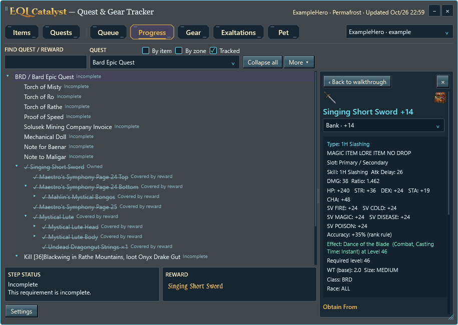
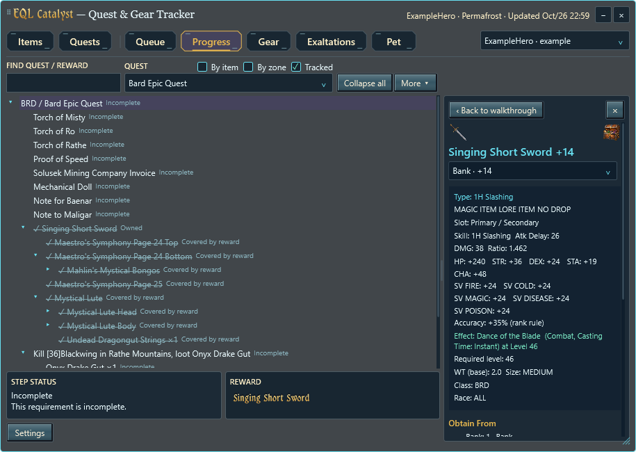
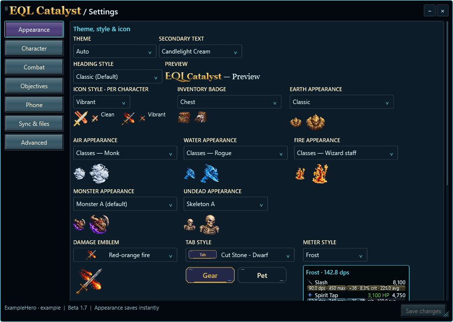
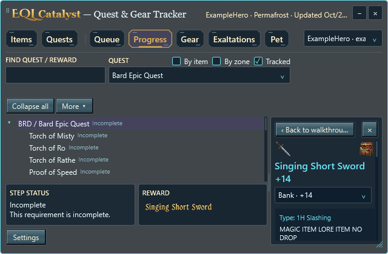

Classic restores the previous branding. EQL Quest Display is an optional heading style and the default for reward-name buttons. Live gold lettering stays sunken while reward details are open; other UI text keeps its existing fonts.




Actual WPF controls with synthetic data. Three themes and 100–300% rendering; physical pointer/multi-monitor acceptance remains separate.